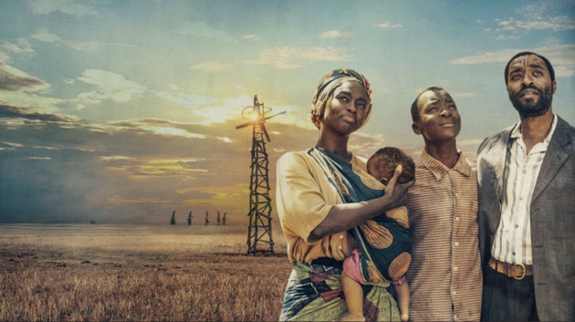

Filme O Menino que Descobriu o Vento
O Menino que Descobriu o Vento

Imagem O Menino que Descobriu o Vento
Inspirado por um livro de ciências, um garoto constrói uma turbina eólica para salvar seu vilarejo da fome. Baseado em uma história real.
Gêneros
Questões sociais
Filmes para a familia
Baseado na vida real
Filmes baseados em livros
Para a família toda
Drama
Independentes
- Classificação etária: 12 anos
- Roteiro e Direção: Chiwetel Ejiofor
- Autores: William Kamkwamba, Bryan Mealer
- Data de Lançamento Mundial: 25 de janeiro de 2019
Inicio